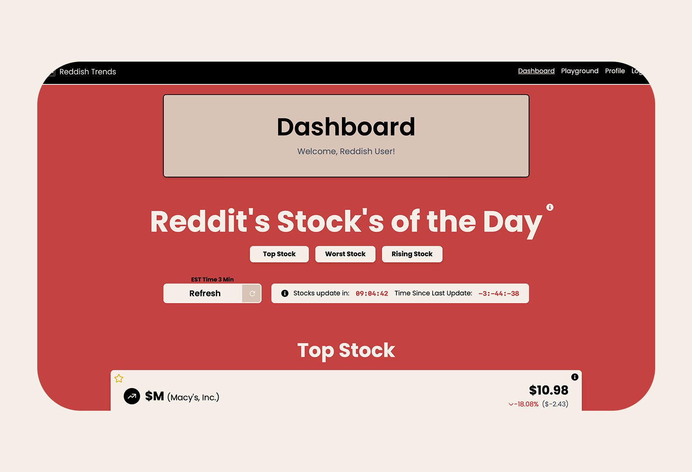
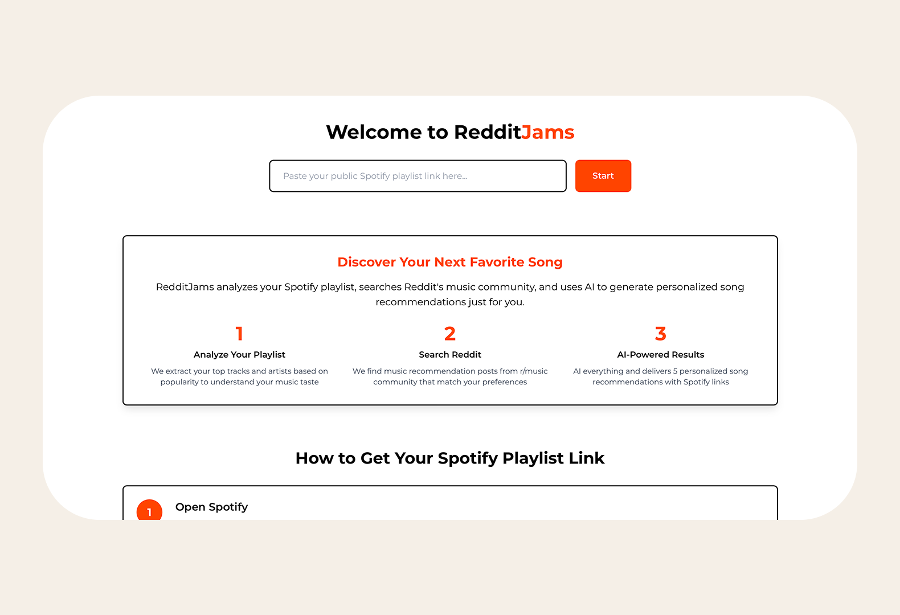
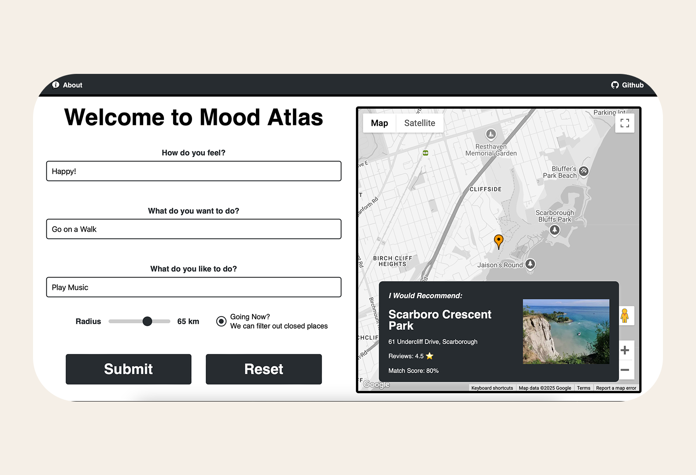

Projects
Reddish Trends

Reddish Trends is a Reddit powered stock market analyzer. This is a unique website that uses reddit to uncover stock data and anaylize sentiment data using algorithms, add financial data using yahoo finance and provide feedback using AI.
- Tools, Technologies, and Methods
- Next.js, Flask, TypeScript, Python, Tailwind CSS, OpenAI, Firebase, Reddit data, and Yahoo Finance. Sentiment analysis combines community discussion with financial data and AI-generated feedback.
- Skills
- Full-stack development, API integration, data processing, sentiment analysis, and AI integration.
- My Role and Contributions
- Project owner and developer. I built the application and connected the Reddit, financial data, and AI features into a single stock-analysis workflow.
- Outcome
- A web application that brings Reddit sentiment, financial indicators, and AI feedback together, making it possible to explore community discussion alongside stock market data.
Reddit Jams

RedditJams is an intelligent music recommendation system that analyzes your Spotify playlist, searches Reddit's music community for similar tastes, and uses GPT-4 to generate personalized song recommendations.
- Tools, Technologies, and Methods
- Next.js, FastAPI, Python, TypeScript, OpenAI, Spotify playlist analysis, and Reddit music-community data. GPT-4 generates recommendations informed by listening preferences and community discussions.
- Skills
- Full-stack development, backend API development, data analysis, recommendation workflows, and AI integration.
- My Role and Contributions
- Project owner and developer. I built the application and brought playlist analysis, Reddit music discovery, and AI-generated recommendations into one experience.
- Outcome
- A personalized music-discovery application that turns an existing playlist and community recommendations into new song suggestions tailored to a listener's tastes.
Mood Atlas

Mood Finder is an app that recommends destinations based on user moods or feelings. It uses Google Places API for location data and Google Maps API to display the recommended places. It uses OpenAI API to analyze the mood of the user and recommend places based on that.
- Tools, Technologies, and Methods
- Next.js, Flask, TypeScript, Python, OpenAI, Tailwind CSS, SQL, Google Places API, and Google Maps API. AI-based mood analysis informs location recommendations displayed on a map.
- Skills
- Full-stack development, API integration, location-based services, database technologies, and AI integration.
- My Role and Contributions
- Project owner and developer. I built the application and connected mood analysis with place discovery and map-based results.
- Outcome
- A destination-discovery application that translates a user's mood into suggested places and displays those recommendations geographically.